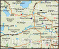

|
Chennai,
is the capital city of Tamil nadu and is a
popular gateway city for
 south India. Chennai is
a colourful blend of traditions and the modern
outlook. Chennai has all – from beautiful south
silk sari’s and ancient temples to modern high
rise buildings.
HOW TO REACH
BY AIR
Chennai has an international airport, connecting
the city to all major cities in India, as well
as abroad. All domestic carriers operate regular
flights to and from Chennai.
BY RAIL
The Centeral Station at Chennai, is the stop for
all major trains coming from different parts of
India. Trains coming from Tamil Nadu and Kerela
stop at Egmore station.
BY ROAD
Excellent roads connect Chennai to all other
parts of southern India. Buses from other cities
stop at Moffussil Bus Stand.
WHAT TO SEE
Government Museum
The Government Museum is worth visiting in
Chennai. The museum has a marvelous
archaeological section that is classified along
major South Indian dynasties namely Chola,
Vijaynagara, Hoysala and Chalukya. The bronze
gallery has a superb collection of Chola Art.
You can also visit the National Art Gallery that
is situated in its vicinity. The place boasts
off some of the most fascinating array of Mughal,
Rajasthani and Deccan artworks.
Marina Beach
Golden sand, clean surroundings and a shimmering
clean blue sea; that is what Marina beach is all
about. The beach is counted among one of the
longest beaches in Asia. Marina beach is located
on the eastern side of Chennai, adjoining the
Bay of Bengal. The most picturesque scene at
this place is sunrise and sunset. Many people
come here for swimming and bathing also although
the sea is very rough here.
Anna Zoological Park
Located at Vandalur, 32 km from Chennai City,
the Anna zoological park is one of the modern
zoos of India and the biggest in South East
Asia. The zoological Park spreads over an area
of about 510 hectares of dry evergreen forests.
The terrain is gently undulating and the
specially created open island type enclosures
make the animals inside the zoo, feel in their
natural habitat. Inside the zoological park,
more than 170 species of mammals, aviaries and
reptiles are exhibited.
Sri Partasarathy Temple
The Partasarathy Temple is located in the
Tiruvallikeni area of Chennai city. The temple
is considered be the oldest of its kind in the
Chennai city as its origins date back to the 8th
century A.D. Parthasarathy temple was originally
built by the Pallavas. This temple is dedicated
to Lord Krishna. The name Parthasarathy has been
derived from two Sanskrit words Partha and
Sarathy. The former word refers to Arjuna and
the later means Charioteer. During festival days
the place is given a new look and accompanied by
various traditional rites.
Fort St.George and St. Mary’s Church
The fort was named after St George who is
believed to have preached in the region. The
fort in present Chennai houses the Tamil Nadu
Secretariat and the Legislative Assembly. The
fort in its present form looks more like a
mansion, rather any fort. The building is a live
example of British milliatary architecture of
the bygone era.
St George's Fort also houses one of the oldest
British Church in India. The church called St
Mary's was built in the year 1680. The
Lighthouse in the northern compound was built in
the year 1844. There is a museum in the fort
that contains some of the archives of the
British occupation in India.
Mammalpuram
Mammalpuram or Mahabalipuram is a small town,
about 57 kms from Chennai city, which has some
of the best examples of South Indian temple
architecture. The place used to be a major port
in ancient India. Mammalapuram was the
commanding post of Pallava rulers from 5th to
9th century. The popular attractions of
Mammalapuram were built during this period. The
rich traditions have been preserved and one can
still catch a glimpse of ancient art of
Mammalapuram.
The region was declared as the World Heritage
Site by UNESCO, in the year 1995. The Shore
Temple built as a twin structure on the shore of
Bay of Bengal, presents the typical Dravidian
architectural style. Equally popular are the
man-made caves, some of which are unfinished.
The Mahishasuramardini Cave and Varaha Cave are
some illustrious examples of cave architecture.
FOR HOTEL OPTIONS IN
CHENNAI |


 Kerala
Kerala